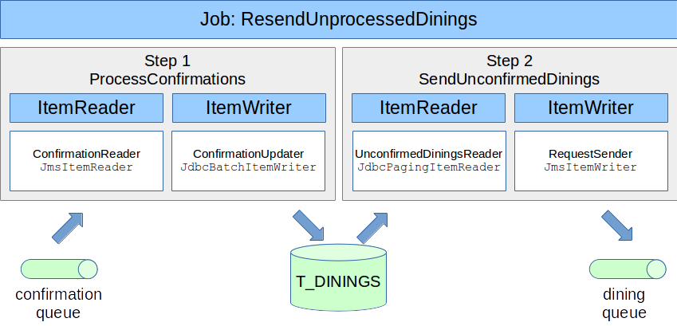
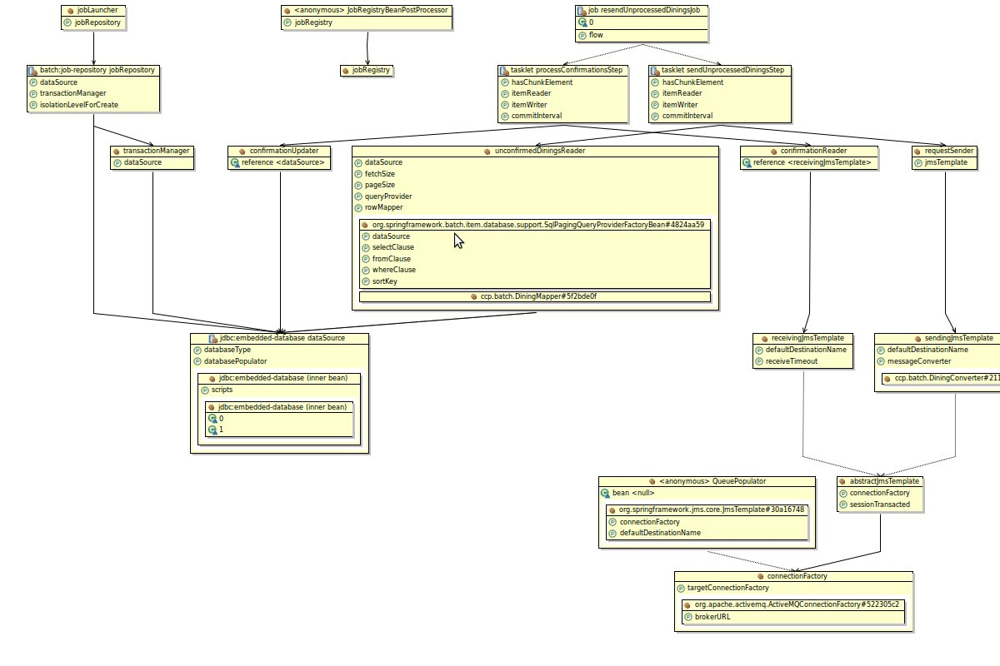

In this lab you will gain experience with using Spring Batch to define and run batch jobs. You'll define the job itself, consisting of two distinct steps, and will implement the code to receive and send JMS Messages and to update and query the database.
What you will learn:
Defining a job using the Spring Batch namespace
Implementing ItemReaders and ItemWriters that contain the batch's logic
Using JDBC batched statements through the JdbcTemplate
Running a batch job with a launcher
Specific subjects you will gain experience with:
Spring Batch
Spring's JmsTemplate
Spring's JdbcTemplate
Estimated time to complete: 60 minutes
The instructions for this lab are organized into sections. In the first section, you'll define a batch job and implement the first step of the job: processing incoming confirmation messages by updating the dinings in the database. In the second section, you'll implement the second step: sending new dining request messages for each dining that has not yet been confirmed.
Before we start with writing the lab code, we'll first provide you with a bit of context. The Credit Card Processor (CCP) sends many Dining requests to the Reward Network. However, depending on the communication mechanism that's used and the implementation of the Reward Network itself, not all requests will be received and processed successfully by the Reward Network application. For requests that have been processed successfully, the Reward Network sends back confirmations to the CCP.
Once a day, the CCP processes all these confirmations and updates its database that holds the requests that have been sent to mark them as confirmed. The requests that are still marked as unconfirmed in the database are then sent again. This way, we can guarantee that a request will eventually be processed. Notice that the Reward Network will automatically ignore requests it has already processed (it's idempotent), so it's safe for the CCP to simply resend a request for which no confirmation was received. Processing all of the confirmations and resending all the unconfirmed requests could interfere with the regular real-time operations, so it's performed once a day by a batch job that runs during the night.
An overview of the complete job can be found in the following diagram:
|  |
In this section you'll implement the first step of the batch job: processing confirmation messages from a queue by updating the corresponding dinings in the database. As can be seen in the diagram, this involves creating an ItemReader that receives JMS Messages and an ItemWriter that updates the database based on the received confirmations. You'll then start the job definition using this first step.
The first step starts with receiving incoming JMS Messages. These messages contain Confirmation objects, each containing the dining ID to be updated.
![[Tip]](images/tip.png) | Tip |
|---|---|
Because we're implementing an offline batch-process and not a real-time system, we can simply pull these messages of the queue synchronously ourselves, instead of using a Spring MessageListenerContainer that listens for incoming messages and then calls our application. That means Spring's JmsTemplate is fine for our purposes. |
TODO 01: Open batch-processors-config.xml and define a JmsItemReader. Give this bean the ID confirmationReader (you can use any ID, but this ID will be referred to in a later step). JmsItemReaders use JmsTemplates to read from JMS, so we will need to provide one for it to use. We've already configured such a JmsTemplate for you named receivingJmsTemplate. If you want, you can examine how this template is configured by finding this bean definition within the jms-ccp-config.xml file. It is setup to read confirmation.queue, which is the queue in which our test data will be populated when we run our test below.
| Tip |
|---|---|
If the JMS messages contained XML, we would probably unmarshal them first into Confirmation objects. This can be done by the JmsTemplate used to read the queue by using a MarshallingMessageConverter. |
The Spring Batch framework will call our confirmationReader a specified number of times and collect the results in a List. It then passes this list to an ItemWriter that can then process them, for example by updating data in a database. This is exactly what you need to do: inside the T_DINING table, each dining that has been confirmed should have "1" in the CONFIRMED column. Fortunately, Spring Batch already provides a special item writer that performs JDBC batched updates against a database. We will configure this off-the-shelf component to update the T_DINING table for us.
TODO 02: Within batch-processors-config.xml, define a JdbcBatchItemWriter. Give this bean the ID confirmationUpdater.
To perform JDBC batched updates, this bean will need a dataSource set, and also the actual SQL statement to be executed.
For the SQL statement provide update T_DINING set CONFIRMED=1 where ID=?.
This statement will set a flag on the database for any row that matches the dining ID (which is exactly what our Confirmation object provides).
The JdbcBatchItemWriter also requires a way to set the placeholders (? symbols) within our SQL statement.
To do this, set the itemPreparedStatementSetter property to reference the bean confirmationPreparedStatementPreparer
defined later in the file. This bean will be explained next.
TODO 03: All ItemWriters in Spring Batch receive a List of items to process. In our case, we wish to perform a single JDBC batch update rather than sending separate update statements to the database. JDBC batch updating is much more efficient than repeating single updates. (Full understanding of JDBC batching operations is outside the scope of this exercise. For further information consult Java's JDBC documentation.)
To issue a batch update, the PreparedStatement used by the JdbcBatchItemWriter needs to prepared once for each item in the List (chunk).
The JdbcBatchItemReader does this by delegating to an object that we provide, an object coded with understanding of the structure of the SQL statement and how it relates to the incoming item.
We have provided an object that does this for you and defined it as a bean with id confirmationPreparedStatementPreparer.
First examine the SQL statement that we have provided. There is a single placeholder (? symbol) that needs to be 'prepared' with the ID (the confirmation's transaction ID) for each item (Confirmation) in the List.
Next, open and examine the ConfirmationPreparedStatementPreparer class.
First, note that this class implements ItemPreparedStatementStetter and it is typed to Confirmation.
Next, note the setValues method; this method is called by the JdbcBatchItemWriter for each item in the batch, passing the Confirmation with the PreparedStatement to be set.
Our SQL statement has only a single parameter to be set, so a single setString() call on the PreparedStatement is used to establish the value as the transactionID for the Confirmation object passed.
Note that this code is called once for each Confirmation in the List (chunk), so in our lab there will be 150 updates in each chunk.
TODO 04: When you have added the two bean definitions, run the ConfirmationIntegrationTests and make sure that it passes. When it does, move on with the next step to start to define our batch job!
Spring Batch has its own domain language for batch-related concepts with a dedicated namespace that allows you to define your jobs using that language directly, instead of through generic <bean> definitions.
TODO 05: Open the batch-job-config.xml in the src/main/resources source folder. Notice how the default namespace is set to the batch namespace URI. That means you don't have to prefix your batch-related elements and you have full code completion support.
Define a job with id resendUnprocessedDiningsJob. Inside of that job, define a step with id processConfirmationsStep. This is going to be the first step of our two-step job. Inside the step element, create tasklet with a chunk child element. This syntax allows you to easily configure the typical case of a step that consists of reading, (optionally) processing and writing some data.
This chunk requires four arguments to be set: reader and writer need to refer to the names of the beans you just defined for the confirmationReader and ConfirmationUpdater, respectively.
| Tip |
|---|---|
You can use code assist (Ctrl + Space) to complete the names of the beans for your reader and writer defined in the other XML file! |
commit-interval needs to be set to the chunk size we want to use. In your case, that value is defined in an external properties file, batch.properties, which is read by a PropertyPlaceholderConfigurer already defined in the batch-processors-config.xml you edited in the previous step. That means you can simply use ${chunk.size} as the value.
Finally, set the attribute reader-transactional-queue to true. Transactional readers will be explained more fully in the next chapter, but the short explanation is that Spring Batch will understand that our reader obtains input from a transactional source that will be rolled-back should an error occur (as opposed to a non-transactional source, like a file, that does not exhibit transactional behavior). This affects its behavior during "retry" scenarios, but since this exercise will only deal with non-failure scenarios this setting is not critical for us.
TODO 06: We have created a simple integration test for your job already. Open the
BatchTests class and implement the test logic.
First, use the provided JobLauncherTestUtils to run your job:
its launchJob() method will automatically create unique job parameters, which are used to identify multiple runs of the same job.
This guarantees that every test run starts a new job execution.
The launchJob() method will block until the entire batch job is complete, which is fine for our test scenario.
After the job completes, assert that the ExitStatus of the returned JobExecution is ExitStatus.COMPLETED.
Also use the provided JdbcTemplate to query the database table for the number of confirmed rows.
(You can use queryForObject(String sql, Integer.class) for this, the query is defined in the NR_OF_CONFIRMED_DININGS variable).
Assert that 150 rows are effected, which is the number of confirmation messages that are present on the confirmation queue when you start the test.
This demonstrates that you've successfully updated the rows in the database based on the incoming messages.
Run the test and make sure it passes. If your test fails but you don't see any error, try setting the log level for org.springframework.batch to debug in the log4j.xml: Spring Batch might swallow exceptions from your reader or writer that it doesn't consider severe enough to fail the step; you will only see these exceptions using the debug log level.
Since the first step has marked all of the dinings in the database that are confirmed, the second step can create new dining requests for those remaining unconfirmed. We can safely send those requests to the server again, as the server will make sure not to process two requests with the same transaction id twice (it's idempotent).
Just like with the first step, this involves implementing an item reader and writer. As before, we will try to use off-the-shelf ItemReaders and ItemWriters to eliminate coding whenever possible. Our second step will read from the database (JDBC Reader) and write to JMS (JMS Writer).
Reading records from a database using a query as input for a batch step is very common: so common in fact, that we don't need to implement a custom ItemReader to do it. We can reuse an existing reader implementation provided by the Batch framework. There are several options, including a reader that scrolls through an open ResultSet and one that uses pagination to get the data we need in chunks. For this lab we have chosen the latter.
TODO 07: Open the batch-processors-config.xml file again. Finish the bean definition for the unconfirmedDiningsReader by setting the queryProvider property using an inner bean of type SqlPagingQueryProviderFactoryBean. Refer back to the slides for an example. You will need to set separate properties for selectClause, fromClause, whereClause, and sortKey as well as the dataSource. For the selectClause you can select all columns using "select *" and the from clause can simply indicate the T_DINING table by indicating "from T_DINING". For the where clause, we want to select all Dining rows that are NOT confirmed so look for the confirmed flag set to 0: "where CONFIRMED=0". Finally, the sortKey must be a unique value to sort the SQL result set by so that distinct queries can be created, and we have such a column in "ID".
This FactoryBean will determine the DBMS type being used and will assemble SQL queries that use pagination. You'll need to inject five properties. The first one, dataSource, needs to refer to the existing dataSource bean. This identifies the type of DBMS being used.
The other four are related to the SQL query you want to run:
selectClause, which is the SELECT part of your query (everything before the FROM)
fromClause, which is the FROM tablename part of your query
whereClause, which is the WHERE someColumn = someValue part of your query
sortKey. The column(s) to sort on. Your SQL query might not sort yet, but to do pagination we need to sort on a column to get repeatable results. You can simply use ID here, as the test data contains incrementally numbered transaction IDs
This SQL query will select all columns of the T_DINING table that have their CONFIRMED column set to 0. The reader will execute this query repeatedly, for a distinct "page" of data at a time, until there is no more data.
TODO 08: But how does the JdbcPagingItemReader know how to map each row to an instance of Dining?
For that we must provide a RowMapper, just as we would if using a JdbcTemplate.
An implementation has been provided for you already: examine the DiningMapper class to see how it works.
This is simple, boring code to write, so we've provided it for you already.
Finish by configuring the rowMapper property of the unconfirmedDiningsReader by injecting it with an instance of DiningMapper.
| Tip |
|---|---|
It's easy to use an inner bean for this again. Do this by instantiating the |
TODO 09: When you're done, run the UnconfirmedDiningsReaderTests, it should pass. When it does, move on to the next step.
TODO 10: The Dining items read in the last step need to be sent to a JMS queue for processing through the Reward Network.
Create a bean called requestSender of type JmsItemWriter that takes care of the sending.
It needs its jmsTemplate set with a JmsTemplate that has a default destination or destination name configured.
You can use the existing sendingJmsTemplate defined in jms-ccp-config.xml.
TODO 11: Return to batch-job-config.xml and add a second step called "sendUnprocessedDiningsStep" with a tasklet and chunk. Use the correct names for the new reader and writer and don't include the reader-transactional-queue attribute for this <chunk>. Set the chunk-interval attribute as you did before.
Also, set the next attribute of the first step to the id of this second step to make sure the new step is executed after the first one! Spring Batch requires you to be explicit about the step ordering and doesn't assume sequence based on the position in the job. We will see the reason later; Spring Batch allows steps to be run in parallel.
When you've done this, the job definition is complete.
If you would like to see a graphical representation of all the components, go to the Spring Explorer View.
Open the batch-intro project and navigate to the system-test-config.xml file.
Right-click it and select Open Graph.
The result should look like this:
|  |
If your job looks good, now let's test it to see if it works!
TODO 12: Return to the BatchTests class again and implement a check that there were really 150 messages sent.
To make this easier, we have provided a QueueViewMBean which has a getQueueSize() method.
We're using a little trick here: ActiveMQ defines a JMX MBean for each queue that will let you check some attributes and perform some operations.
We've used Spring's JMX support to obtain a reference to the MBean for the dining queue: you can see how this is done in the system-test-config.xml configuration file.
Run the test and make sure it passes. When it does, you have successfully completed this lab!